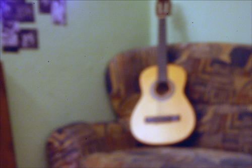
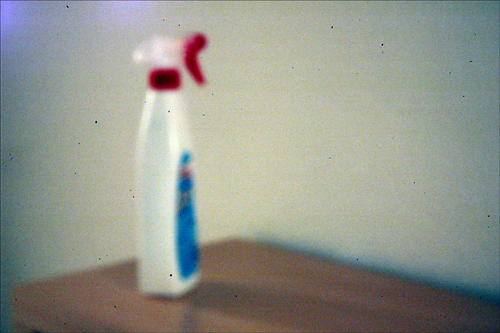
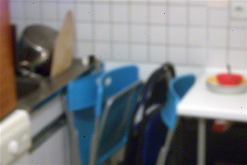
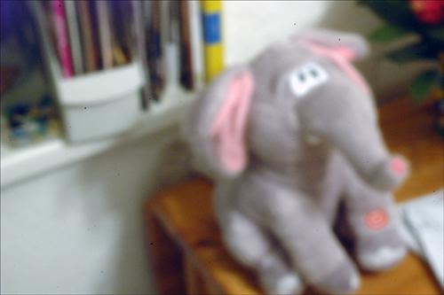
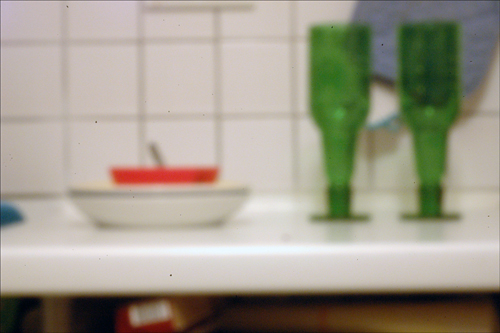

Digitale Lochkamera
Ich bin die Tage auf eine (theoretisch) geniale Idee gestoßen: Man kann seine DSLR ganz einfach zur Lochkamera umfunktionieren, indem man in den Verschlussdeckel des Kamera-Bodys ein Loch bohrt und ein Blechplättchen mit einem möglichst kleinen Loch darin draufklebt.
Das musste ich natürlich ausprobieren:





Wie man sieht, ist das ganze ein recht unscharfes Vergnügen. Das verwundert mich ein wenig, da der Schärfebereich bei Lochkameras doch eigentlich unendlich ist und somit alles scharf ist. Falls jemand weiß, woran es liegen könnte, wäre es nett, wenn er oder sie das in einem Kommentar kurz erläutern könnte.
PS: Die violetten Flecken oben links in den Fotos sind sog. "Color Bloom" und entstehen durch die Überhitzung des Sensors. Alle Fotos sind nämlich 30 Sekunden belichtet.
13 Kommentare zu "Digitale Lochkamera"
- Externe Links im selben Fenster öffnen
- Externe Links in neuem Fenster öffnen
TediousNilsen
ich würde behaupten, dass das verhältnis aus brennweite und lochgröße nicht passt. sonst müsste es ja scharf sein. wenn man die schuhkarton-kamera nimmt... der karton ist ja so 30 cm lang, das loch mit nem nadelstich vielleicht 0,5mm, da gehts ja. durch die extrem verkürzte brennweite der kamera, den kleinen sensor und ein zu großes loch in der blechplatte wirds doch unscharf? vielleicht probierst du nen kleineres loch zu machen. oder es liegt daran, dass die räume zu klein sind und der schärfebereich sozusagen hinter der wand liegt...
Herschel Rubinstein
du hast recht, das verhältnis von lochdurchmesser und abstand zum sensor muss passen. verdammt, da liegt wohl doch noch etwas tüftelei vor mir ;-(
TediousNilsen
kann man das nicht konstruieren? naja. kleiner kann das loch immer =)
Herschel Rubinstein
es gibt eine formel dafür. habe ja mal auf einem dgd lochkameras gebaut. blöderweise ist mir das nur entfallen.
…also die fomel
TediousNilsen
muhahha... duuuuude: http://de.wikipedia.org/wiki/Lochkamera
TediousNilsen
achja: den hier brauchste auch: http://www.haesileit.de/dielochkamera/f_rechner.htm
Micha
Hilft Dir vielleicht mrpinhole.com?
Übrigens schick, dass Du das gleich mal ausprobiert hast. Mit gefällt ja der Elefant am besten. Der kuckt so schön debil
Herschel Rubinstein
@nils: danke. du kannst deine kommentare übrigens aus dem spam-ordner holen, indem du dich einloggst und im backend auf kommentare gehst :wink
@micha: vielen dank, die seite ist auf jeden fall interessant. und der elefant kann auf knopfdruck noch viel debiler singen und mit den ohren wackeln.
TediousNilsen
oh. ja. stimmt. ich hab uff arbeit immer keinen nerv mich einzuloggen...
eric1000
auch das passende loch wird dir nicht viel bringen.
bei dslr's ist der fokale abstand ca 36mm.
damit ergibt sich ein idealer lochdurchmesser von ca 0.22 mm.
also ist ein "bildpunkt" (bildlich gesprochen" nie kleiner als 0.22mm!
da aber auf deinem chip in der dslr sicher innerhalb von 0.22mm viel mehr als nur ein bildpunkt zu finden sind wirkt das bild unscharf.
das ist normal!
"schärfer" bekommst du es nur wenn du die fläche vergröserst mit der aufgenommen wird.
bei einem chip ist das nicht so einfach..
deswegen nehme ich da gutes analoges fotopapier.
http://www.flickr.com/photos/30874308@N06/sets/72157622676560855/
http://www.flickr.com/photos/30874308@N06/sets/72157612512251532/
grüße...
...eric1000